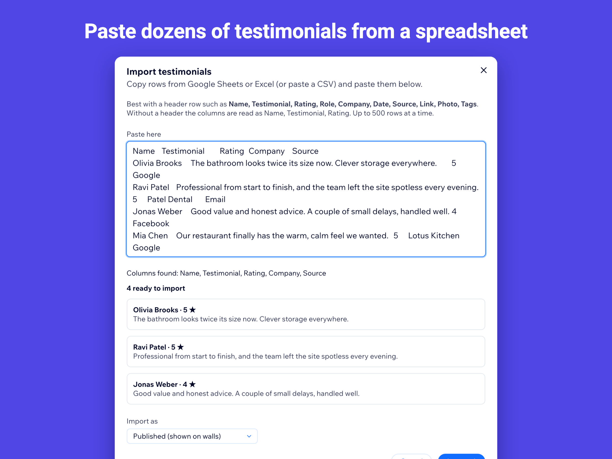

How to add testimonials to a Wix site
Testimonials work best close to the decision: next to prices, on service pages and at checkout. Here is how to add them with Testimonials Wall.
1. Install the app and add your testimonials
Install Testimonials Wall & Slider from the Wix App Market. The dashboard opens with a few labelled samples so you can see the result; they are never shown on your live site. Add real testimonials one by one, or copy rows from a spreadsheet and paste them in with “Import from a spreadsheet”.

2. Choose a layout
A card grid suits a dedicated reviews page, a carousel fits a home page section, a list works for long, detailed quotes, and a spotlight puts one strong quote next to a call to action.
3. Show the right testimonials on each page
Tag testimonials by service (for example “weddings” or “corporate”), then set each wall to show one tag. Add a minimum rating if you prefer, and switch on the rating summary.
4. Place the widget
In the editor, open Add Elements, then Apps, and drag Testimonials Wall onto the page. In the widget settings choose which wall it shows, then publish.
Questions
How many testimonials should I show?
Six to twelve strong, specific testimonials usually work better than a long wall. Put the most concrete ones first or mark them as featured.
Can I use reviews from Google or Facebook?
Copy the text with the customer’s name, set the source (for example “Google”) and paste a link to the original review so visitors can check it.
See it in the Wix App Market